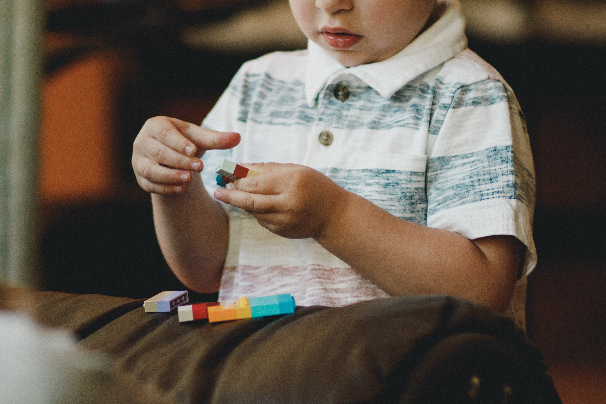

Consequências da seletividade alimentar em crianças com TEA(Transtorno do Espectro Autista)
A maioria das crianças com transtorno do espectro autista apresenta seletividade ou bloqueio alimentar. Veja os resultados de duas importantes pesquisas científicas que comprovam esta afirmação:
Em estudo realizado com 158 crianças
diagnosticadas com transtorno do espectro autista, 79 apresentaram seletividade alimentar, evidenciando que o grupo de crianças com TEA e seletividade alimentar apresentaram mais sintomas de carências nutricionais que o grupo de crianças
com TEA sem seletividade alimentar. Outra pesquisa mais recente comparou 53 crianças com autismo com 58 crianças sem o transtorno e encontrou que 64% das crianças com autismo apresentaram seletividade alimentar e apenas 7% das crianças
sem o transtorno apresentaram a seletividade alimentar, demonstrando a diferença da sensibilidade sensorial entre os grupos.
As crianças com transtorno do espectro autista apresentam maior resistência para novos costumes alimentares:
Inserção de alimentos novos, com texturas, temperaturas, formatos e odores diferentes, podem causar estranheza, e assim provocando algum bloqueio alimentar entre eles à seletividade alimentar, evidenciando um quadro complexo
e que necessita de abordagem multidisciplinar.
Este inadequado hábito alimentar pode trazer diversas consequências nutricionais negativas no desenvolvimento afetando não apenas a infância, mas também a vida adulta: obesidade,
carência de micronutrientes, baixa ingestão calórica, déficit de crescimento, além da fobia em se alimentar, desencadeando choros e crises.
O maior impacto da seletividade alimentar é encontrado nos níveis sociais e familiares.
Em 2020 encontraram em seus estudos que a maioria dos autistas estudados se sentia julgados por serem seletivos na hora de se alimentar, criando assim uma barreira social.
O trabalho da Equipe Multiprofissional Saber Educacional
(pedagogos, psicólogos, médicos, nutricionistas, fonoaudiólogos e terapeutas ocupacionais) juntamente com a família, pode trazer melhores efeitos para a metodologia de tratamento escolhida.
Sobre a Saber
A Saber Educacional iniciou suas atividades em abril de 2020, com o objetivo de oferecer atendimento clínico especializado a crianças, adolescentes e adultos
Nossas Redes Sociais